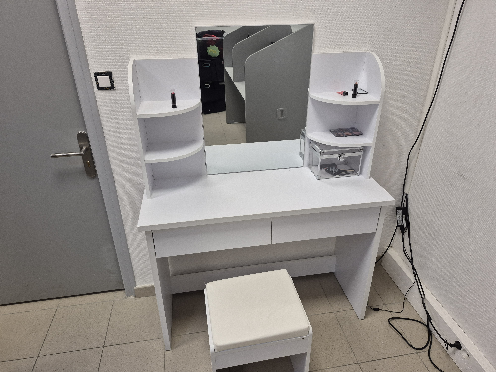
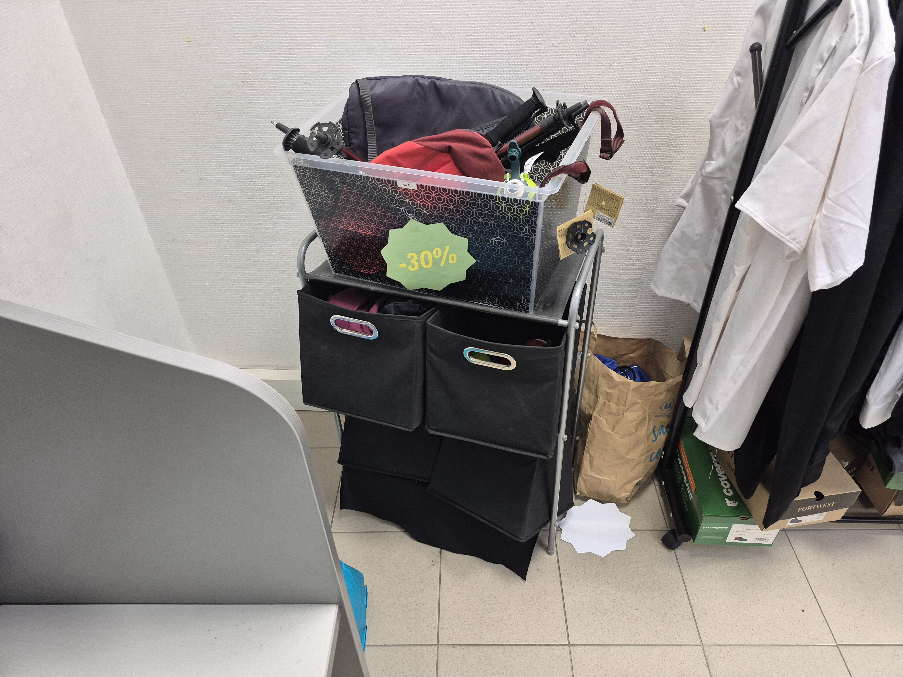
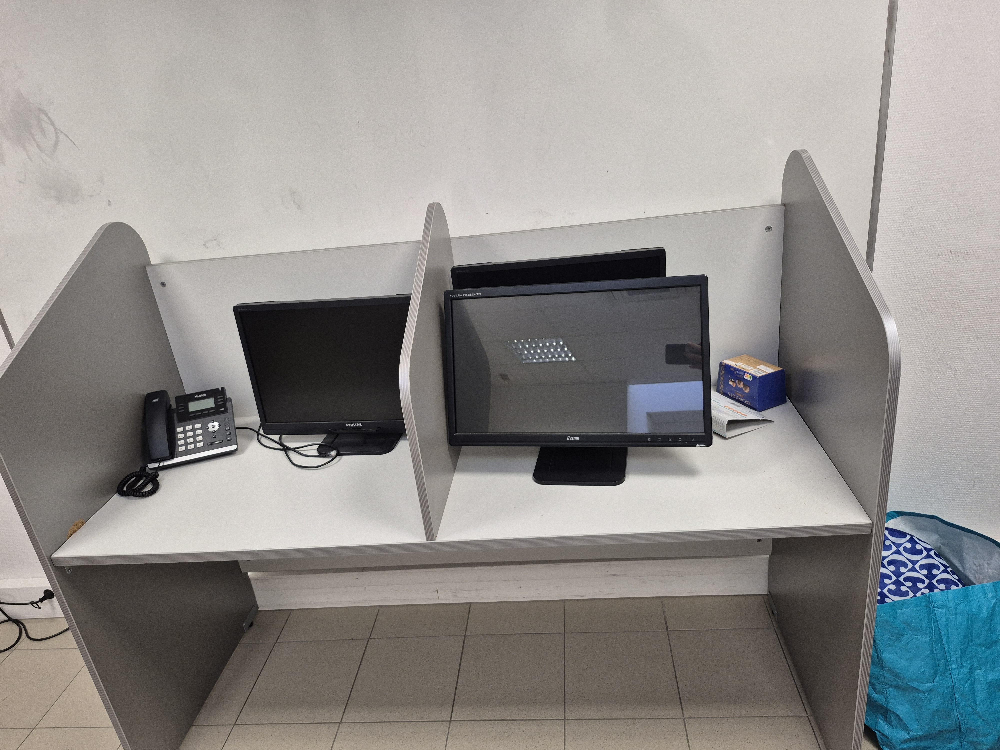
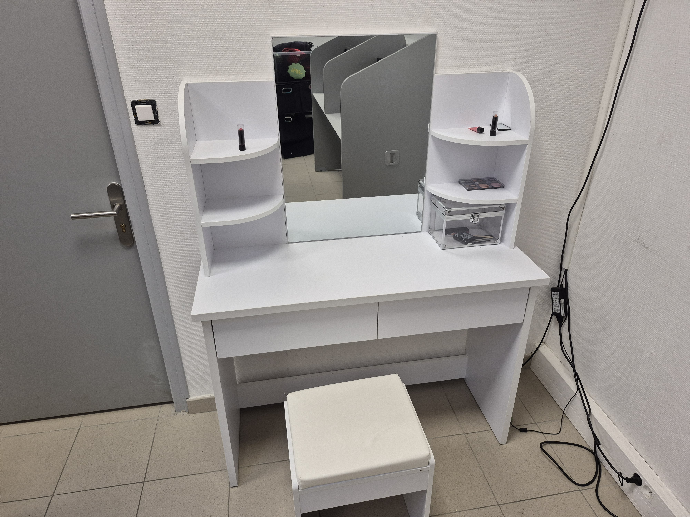
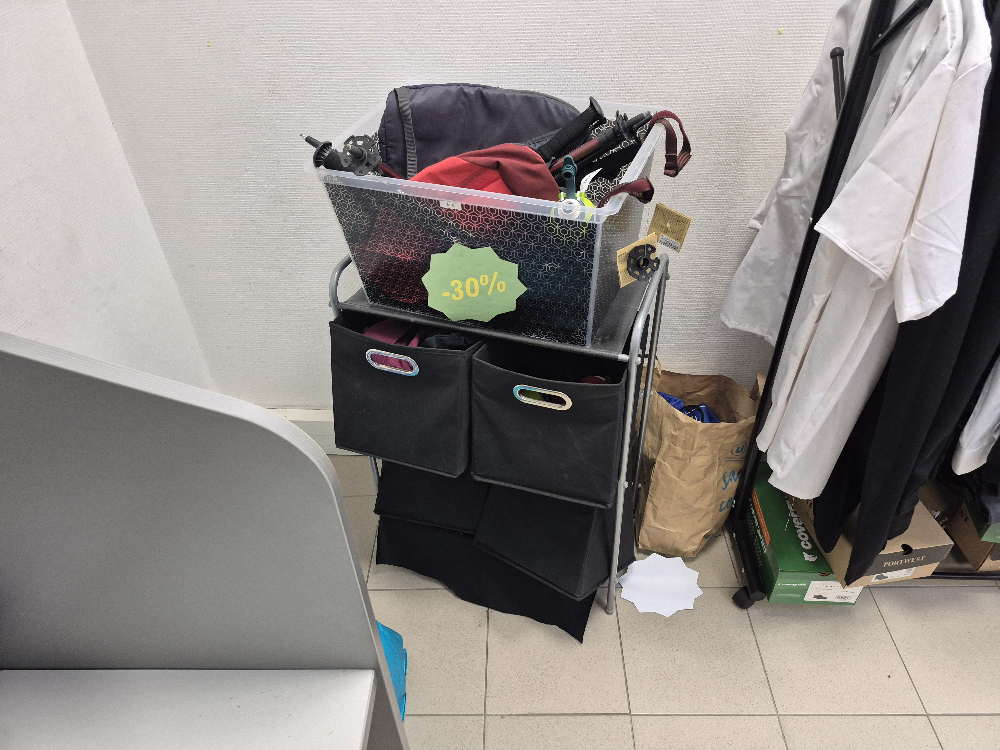
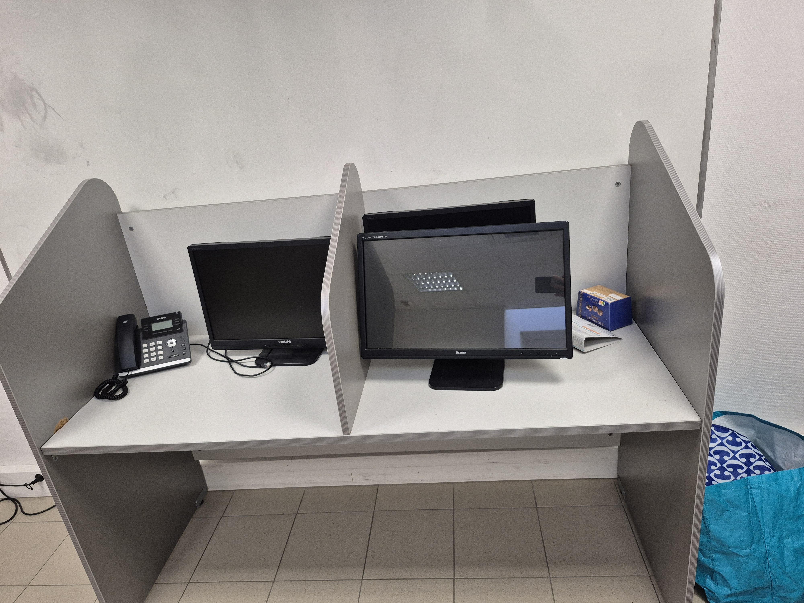

Intervieweur :
Bonjour, est-ce que vous pouvez vous présenter s'il vous plaît ?
Formatrice (00:06) Alors je m'appelle Marie Poggi, je travaille à l'e2c
en tant que référente des formatrices depuis 9 mois, je suis arrivé ici
depuis de janvier.
Intervieweur :
Quel but de l'e2c store ?
Formatrice :
Le but de l'e2c store, c'est de rendre les situations professionnelles
plus concrètes, puisqu'on a accès à des ordinateurs. Des étalages de
produits pour faire des simulations de vente en grande surface, on a
aussi accès à des téléphones, tout un tas de situation que l'on peut
rencontrer dans la vie de tous les jours.
Intervieweur :
D'accord. D'où l'idée de ces stores ?
Formatrice :
L'idée de l'e2c store, c'était, il y a environ un an, ce sont des
formateurs, qui au cours d'une réunion ont déterminée que ça pouvait
etre un objectif assez intéressant de pouvoir faire des simulations
d'emploi.
Intervieweur :
quant a été mis en place l'e2c store ?
Formatrice :
Peu de temps après cette réunion, donc ça fait à peu près un an.
Intervieweur :
Ah oui, donc, ça a été vite. Comment a été t'il mit en place ?
Formatrice :
Alors, la mise en place a été plutôt simple puisque les éléments les
avaient déjà plus ou moins et on avait une salle vacante, donc c'était
assez facile de mettre tout ça en place rapidement.
Intervieweur :
Et qui est en charge de l'e2c store ?
Formatrice :
C'est tous les formateurs référés, en fait, on a tous accès, et on peut
tous décider de mettre une activité en place sur l'e2c store. Et là, en
fait, on l'a réactivée avec le projet Carrefour*.
Intervieweur :
oui. Et je vous remercie.
Formatrice :
Merci.